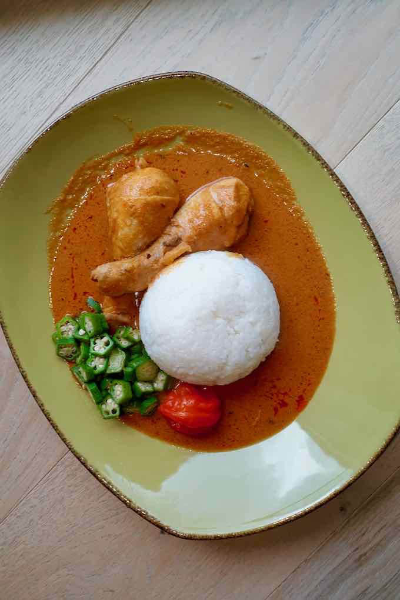

Ghanaian Peanut Soup (Nkate Nkwan)

Ingredients:
- 2 cups raw peanuts (or 1 cup smooth peanut butter as a substitute)
- 1 medium-sized onion, finely chopped
- 2 cloves of garlic, minced
- 1-inch piece of ginger, minced
- 2 medium tomatoes, pureed
- 1-2 tablespoons tomato paste
- 1-2 pounds of chicken, goat meat, or beef, cut into pieces (optional)
- 6 cups chicken or vegetable broth
- 1 hot pepper (Scotch bonnet or habanero), whole or minced (depending on your heat preference)
- 1 bay leaf
- Salt to taste
- Optional vegetables: diced carrots, bell pepper, or sweet potatoes
- Garnish: chopped cilantro or parsley
Instructions:
- Roast raw peanuts in a dry pan over medium heat until golden brown, then blend into a smooth paste with a little water, or use smooth peanut butter.
- Season and brown the meat in a large pot, then set aside.
- Sauté onions, garlic, and ginger until fragrant. Add pureed tomatoes and tomato paste, cooking until thickened.
- Return the meat to the pot, add broth, hot pepper, and bay leaf. Boil, then simmer for 15 minutes.
- Stir in the peanut paste or peanut butter and add vegetables if using. Simmer for 30-60 minutes until meat is tender and soup is thick.
- Remove bay leaf and hot pepper. Season with salt and garnish with cilantro or parsley before serving.
- Serve hot with rice, fufu, or boiled yams.